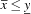
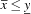

A Simple Propagator
The description of the implementation of real-interval constraints is closed with the discussion of the propagation function of a simple propagator, namely a propagator for the constraint  . The rest of the class definition of that propagator is similar to other propagators and therefore omitted here.
. The rest of the class definition of that propagator is similar to other propagators and therefore omitted here.
OZ_Return RILessEq::propagate(void)
{
RIVar x(_x), y(_y);
// step (1)
if (x->upperBound() <= y->lowerBound()) {
x.leave(); y.leave();
return OZ_ENTAILED;
}
// step (2)
if((*x <= y->upperBound()) < 0.0)
goto failure;
// step (3)
if((*y >= x->lowerBound()) < 0.0)
goto failure;
return (x.leave() | y.leave())
? OZ_SLEEP : OZ_ENTAILED;
failure:
x.fail(); y.fail();
return OZ_FAILED;
}
Assume that the propagator stores in its state references to its parameters on the Oz heap by the members OZ_Term _x, _y;. The function propagate() obtains access to the constraint store by declaring two instances of class RIVar and passing the Oz terms _x and _y as arguments.
The propagation proceeds in three steps.
Test if the constraint
 is subsumed by the constraint store, i. e., .
is subsumed by the constraint store, i. e., . Constrain the upper bound of
 :
:  .
. That is implemented by
ri_float RI::operator.
<= (ri_float)Constrain the lower bound of
 :
:  .
. That is implemented by
ri_float RI::operator.
>= (ri_float)
As said in Section ``The Actual Real-Interval Constraint'' these operators return the width of the computed constraint. A width less than 0 indicates that the constraint has become inconsistent and propagation branches to label failure.
The function OZ_CtVar::leave() returns OZ_True if the constraint does not denotes a value. This is used to detect whether the propagator has to be rerun (indicated by OZ_SLEEP) or not (indicated by OZ_ENTAILED).
The return value OZ_FAILED informs the runtime system that the constraint is inconsistent with the constraint store.